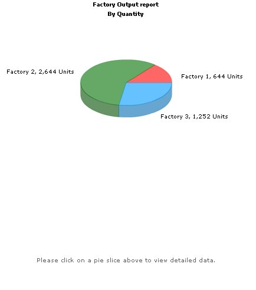
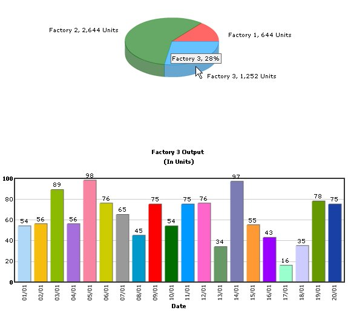

Combining FusionCharts, PHP & JavaScript (dataXML) method |
In this example, we will see how to provide updated XML data to chart using JavaScript functions. The chart will simply accept that XML data and then render. This method can effectively be used in your AJAX applications, where your JavaScript code gets the updated XML from server and then provides it to charts locally. You can process the data received from AJAX Calls, build XML from it and finally provide it to the chart. Before you proceed with the contents in this page, we strictly recommend you to please go through the sections "How FusionCharts works?" and "Plotting from Database Example", as we'll directly use a lot of concepts defined in those sections. The code discussed in this example is present in Download Package > Code > PHP > DB_JS folder. |
| Defining the applicaton |
Let us first define what we want to achieve in this example. We'll carry on from our previous drill-down example and convert it into a single page example. In our previous example, we were showing the Production Summary of all the factories in a pie chart. When the user clicked on a pie slice, he was taken to another page, where a detailed date-wise chart was shown for the required factory. In this example we will put both the charts together on a single page where clicking on a pie slice of the Production Summary chart will open the detailed chart on the same page without page refresh.
|
| Creating the page - Default.php |
| Both the charts and JavaScript functions to manipulate the charts is contained in Default.php. It has the following code: |
<?php <?php //The entire app (page) can be summarized as under. This app shows the break-down //The XML data for the pie chart is fully created in PHP at run-time. PHP interacts //We've used an MySQL database which contains two databases. //Before the page is rendered, we need to connect to the database and get the //The following string will contain the JS Data and variables. //Generate the chart element //initialize index // Fetch all factory records //Iterate through each factory $indexCount++; //Create JavaScript code to add sub-array to data array //Now create second query to get date-wise details for this factory if ($result2) //Now create another query to get details for this factory //Finally, close <graph> element |
In this page, before rendering any HTML code, we first fetch all the data from database and sotre it as JavaScript array. To do so, we use string concatenation in PHP variables to store all data as JavaScript array code. Once the JavaScript code is built in our PHP variable, we write it out in the <SCRIPT> section of HTML <HEAD>. If you run this page and view the source JavaScript code, you'll see the following: |
| var data = new Array(); data[1] = new Array(); data[1].push(new Array('1/1',21)); data[1].push(new Array('2/1',23)); data[1].push(new Array('3/1',22)); data[1].push(new Array('4/1',24)); data[1].push(new Array('5/1',32)); data[1].push(new Array('6/1',21)); data[1].push(new Array('7/1',34)); data[1].push(new Array('8/1',32)); data[1].push(new Array('9/1',32)); data[1].push(new Array('10/1',23)); data[1].push(new Array('11/1',23)); data[1].push(new Array('12/1',32)); data[1].push(new Array('13/1',53)); data[1].push(new Array('14/1',23)); data[1].push(new Array('15/1',26)); data[1].push(new Array('16/1',43)); data[1].push(new Array('17/1',16)); data[1].push(new Array('18/1',45)); data[1].push(new Array('19/1',65)); data[1].push(new Array('20/1',54)); data[2] = new Array(); data[2].push(new Array('1/1',121)); data[2].push(new Array('2/1',123)); data[2].push(new Array('3/1',122)); data[2].push(new Array('4/1',124)); data[2].push(new Array('5/1',132)); data[2].push(new Array('6/1',121)); data[2].push(new Array('7/1',134)); data[2].push(new Array('8/1',132)); data[2].push(new Array('9/1',132)); data[2].push(new Array('10/1',123)); data[2].push(new Array('11/1',123)); data[2].push(new Array('12/1',132)); data[2].push(new Array('13/1',153)); data[2].push(new Array('14/1',123)); data[2].push(new Array('15/1',126)); data[2].push(new Array('16/1',143)); data[2].push(new Array('17/1',116)); data[2].push(new Array('18/1',145)); data[2].push(new Array('19/1',165)); data[2].push(new Array('20/1',154)); data[3] = new Array(); data[3].push(new Array('1/1',54)); data[3].push(new Array('2/1',56)); data[3].push(new Array('3/1',89)); data[3].push(new Array('4/1',56)); data[3].push(new Array('5/1',98)); data[3].push(new Array('6/1',76)); data[3].push(new Array('7/1',65)); data[3].push(new Array('8/1',45)); data[3].push(new Array('9/1',75)); data[3].push(new Array('10/1',54)); data[3].push(new Array('11/1',75)); data[3].push(new Array('12/1',76)); data[3].push(new Array('13/1',34)); data[3].push(new Array('14/1',97)); data[3].push(new Array('15/1',55)); data[3].push(new Array('16/1',43)); data[3].push(new Array('17/1',16)); data[3].push(new Array('18/1',35)); data[3].push(new Array('19/1',78)); data[3].push(new Array('20/1',75)); |
You can clearly see that our PHP code has outputted JavaScript code that can now locally create an array and feed it with requisite data. Now, before we get to the JavaScript functions, let's first see what we're doing in our PHP Code:
Effectively, our page is now set to show two charts. The pie chart shows the summary data provided to it using dataXML method. The column chart shows the above "friendly" error message. Now, when each pie slice is clicked, the updateChart() JavaScript function is called and the factoryID of the pie is passed to it. This function is responsible for updating the column chart and contains the following code: |
function updateChart(factoryIndex) |
Here,
When you now see the application, the initial state would look as under: |
|  |
| And when you click on a pie slice, the following would appear on the same page (without involving any browser refreshes): |
|  |
| This example demonstrated a very basic sample of the integration capabilities possible with FusionCharts Free. For advanced demos, you can see and download our FusionCharts Blueprint/Demo Applications. |